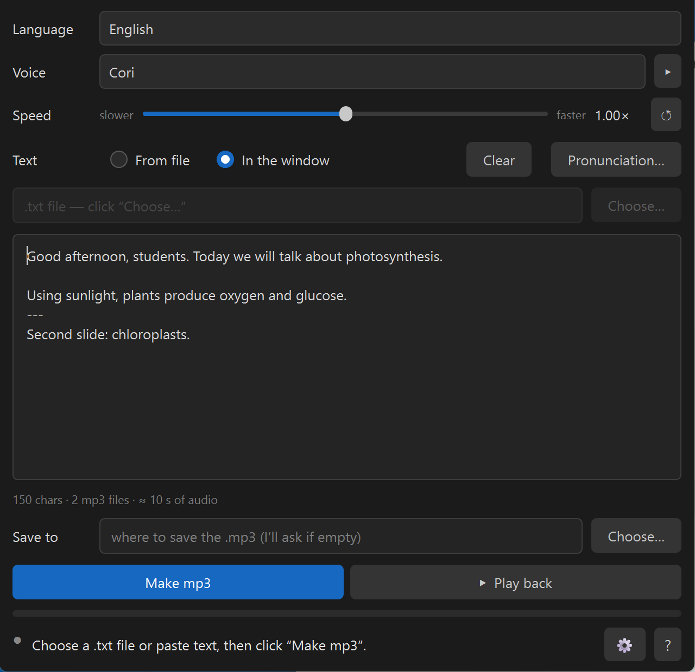
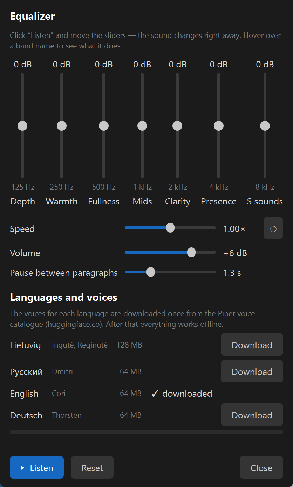

Made with AI: the code was written by Claude (Anthropic) together with Robertas, the icon was made with AI. The recordings are synthetic — every MP3 carries a tag saying so.
What it is for
Lecturers and teachers
Narrate the notes for your slides. A line --- in the text splits the recording into several MP3 files, one per slide.
A whole book
Open a .txt file: the program shows roughly how long the audio and the work will take, then reads all of it. 100 pages usually take a few minutes.
Anyone who would rather listen
An article, a letter, your notes — into an MP3 and into your headphones: on the road, in the kitchen, on a walk.
What it does
Four languages
Lithuanian (Ingutė and Reginutė), Russian (Dmitri), English (Cori), German (Thorsten) — all from the official Piper voice catalogue. Pick a language and the whole window switches to it. ▸ plays a sample first.
Voices only for the languages you need
Tick the languages during installation; their voices are downloaded once (Lithuanian 128 MB, the others 64 MB each). Add more at any time in ⚙ → “Languages and voices”.
Speed slider
Slower or faster, as you like. ↺ returns to the voice’s own pace.
From a file or in the window
A .txt file (old Windows encodings work too) or text you paste or type.
Pronunciation list
“As written → as it should sound” for terms and names, with a preview. Each language has its own list.
Equalizer ⚙
Seven bands from low to high, volume, and the pause between paragraphs in seconds. Move the sliders while you listen — the sound changes right away. Speed is there too.
Select and ▸
Select a piece of the text and press ▸ to hear just that part.
What it looks like


How to use it
Pick the language, the voice and, if you like, the speed.
From file — “Choose…” and a .txt file; In the window — paste your text.
“Make mp3” — the file appears next to the text file (or wherever you say).
“Play back” — not happy? Change the speed, voice or sound and make it again.
Download:Skaitykle-0.2.0-setup.exe — about 80 MB, Windows 10/11 (64-bit). Installs into your user profile, no administrator rights needed. On first start the program offers to download the voices of the languages you ticked and checks every file against its checksum; after that it works offline.
Windows will show a blue “Windows protected your PC” screen. It is not malware: the installer has no paid code-signing certificate, so SmartScreen does not know the publisher. Click “More info” → “Run anyway”. The file’s SHA256 is on the Release page next to it.
Privacy, plainly
Your text and the audio never leave the computer: the voices run on your machine. The program goes online in two cases only. First, to download the voices of the languages you chose from the Piper voice catalogue (huggingface.co): only when you click “Download”, and only the voice file is fetched. Second, “Ask an AI”: it asks whether you are sure and only then opens claude.ai in your browser with an introduction to the program. Your text is in neither.
Voices
Reginutė (Lithuanian) — trained on the LIEPA corpus, licence CC BY 4.0.
Ingutė (Lithuanian) — grown from the Reginutė model with the authors’ Python tools. Licence NewGenLTU OpenRAIL-D: free to use, no charge, commercial use not forbidden; when passing it on, include LICENSE-VOICE and state the origin.
Dmitri (Russian) — recordings from OHF-Voice voice-datasets, CC0.
Cori (English) — LibriVox recordings, public domain.
Thorsten (German) — Thorsten-Voice, CC0.
All voices are published in the official Piper voice catalogue; the program checks every downloaded file against its SHA256. The Russian, English and German voices were chosen for the licence of their recordings: CC0 or public domain only.
Limits
The program’s own reading recipe (stress dictionary, numbers in words) is for Lithuanian only. The Russian, English and German voices read the way Piper taught them: they say numbers themselves, and Russian case endings of numbers are not always right.
Reads .txt files and pasted text only for now (text copied out of Word, PDF or PowerPoint is fine).
Windows only.
It is a synthetic voice — natural, but not a person.
Stuck? Ask an AI
Not a programmer? In the program click “?” → “No answer here? Ask an AI” — a chat opens with an assistant that has already received the author’s briefing about this program. Ask in your own words, in your own language.
Or paste this into any AI chat: Read https://raw.githubusercontent.com/RobertasTa/skaitykle/main/AI_CONSULTANT_BRIEF.md and help me with Skaityklė.
Our other gift — Diktuoklė
Diktuoklė — offline dictation
Skaityklė turns text into a voice; Diktuoklė does the opposite: hold Ctrl, speak Lithuanian, Russian or English, and the text appears in any program — Word, a browser, an e-mail. Offline and free as well.
Piper and Michael Hansen for the engine and the voice catalogue; the creators of the LIEPA corpus; Nabu Casa for the Dmitri recordings, Thorsten Müller for Thorsten-Voice, Bryce Beattie and the LibriVox readers for Cori; Spotify for pedalboard (equalizer and MP3 reading); the espeak-ng, Qt / PyQt6, ONNX Runtime, libsndfile and LAME projects.
Skaityklė is the mouth, Diktuoklė the ears. Questions and feedback — Issues.